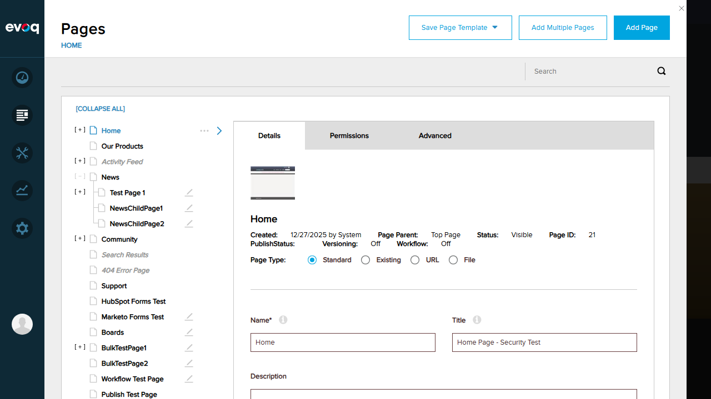
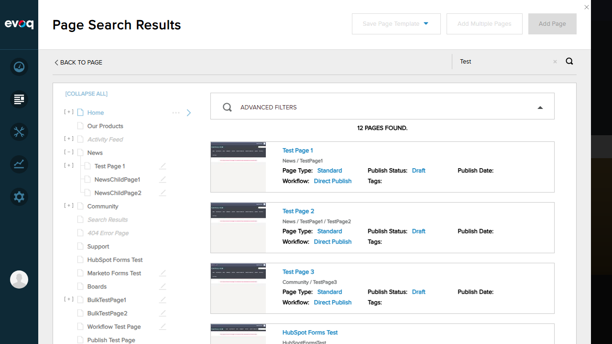
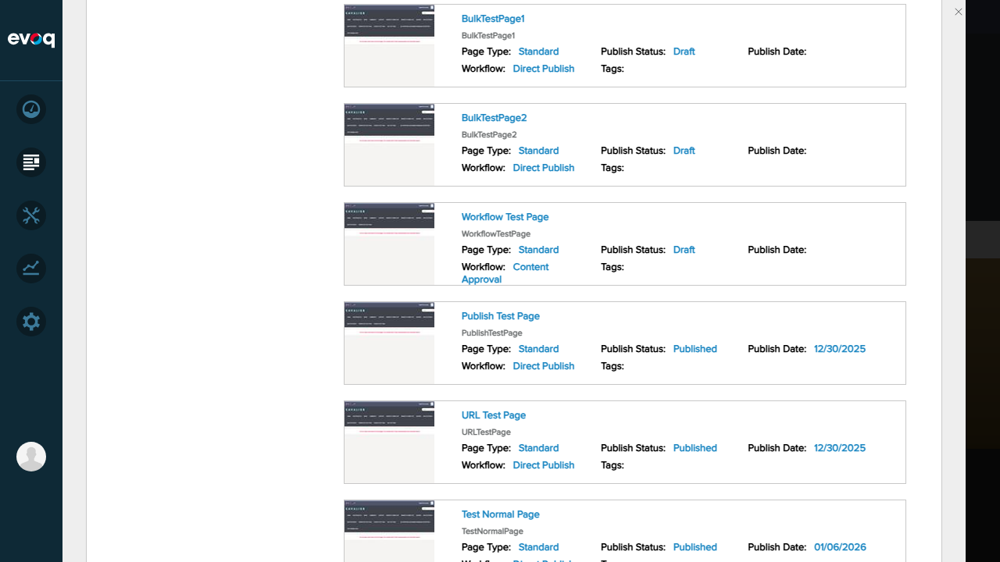
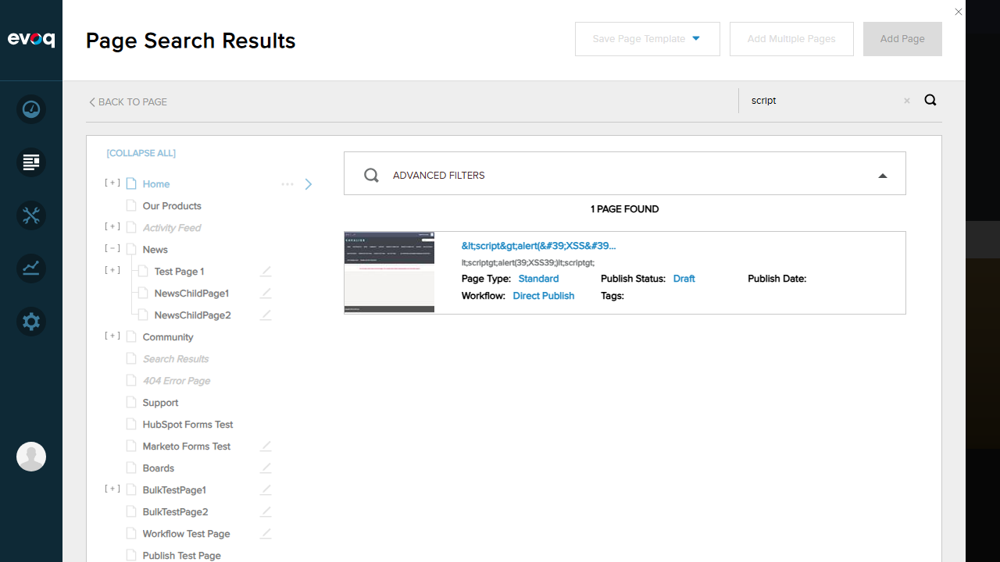
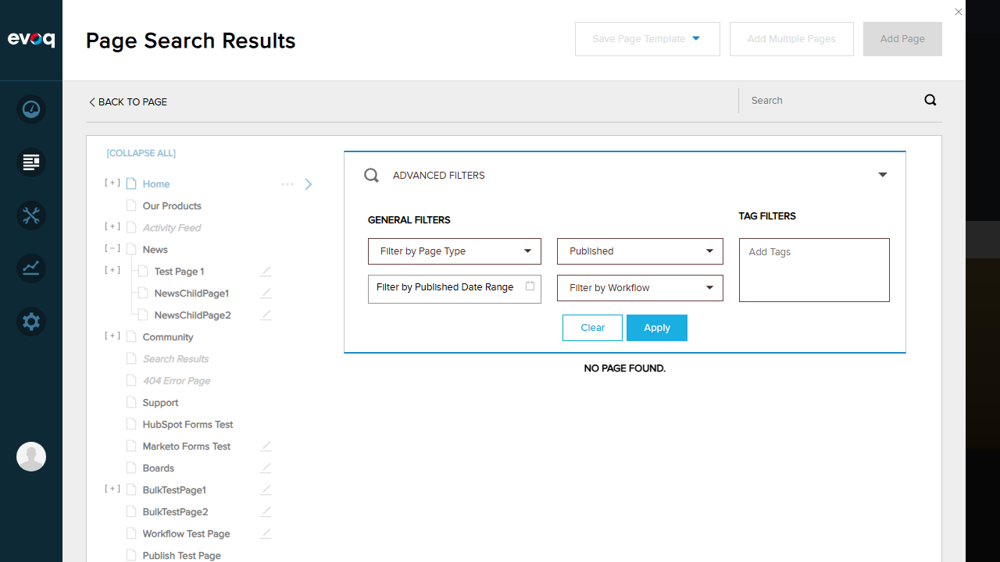
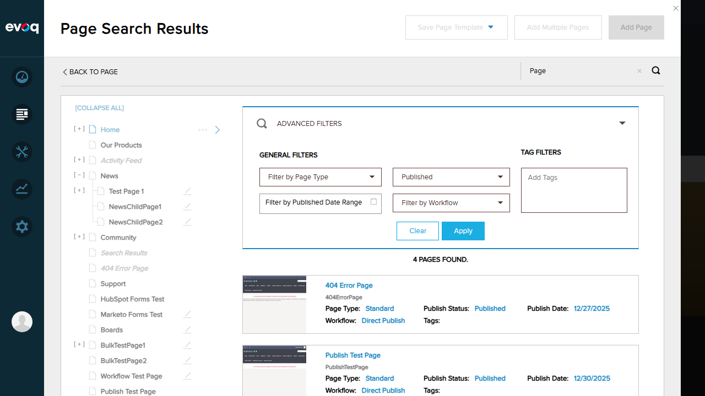
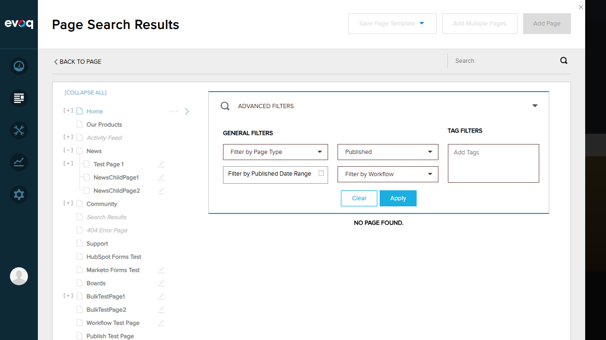
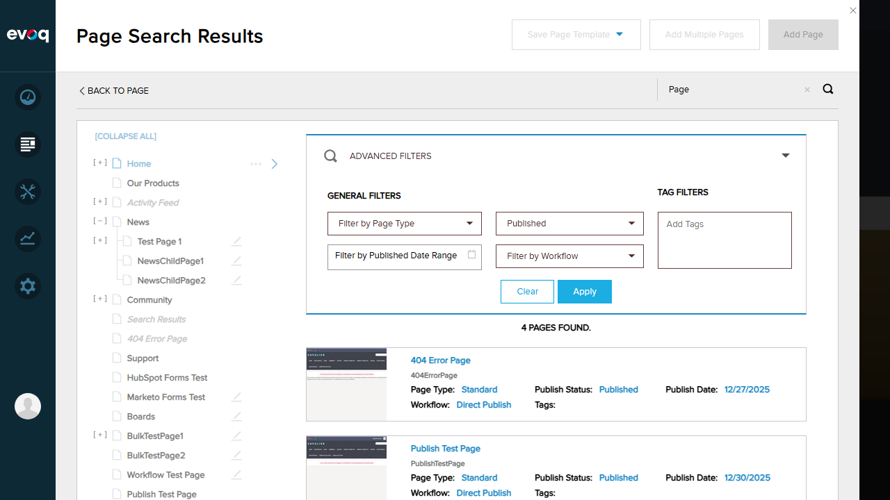
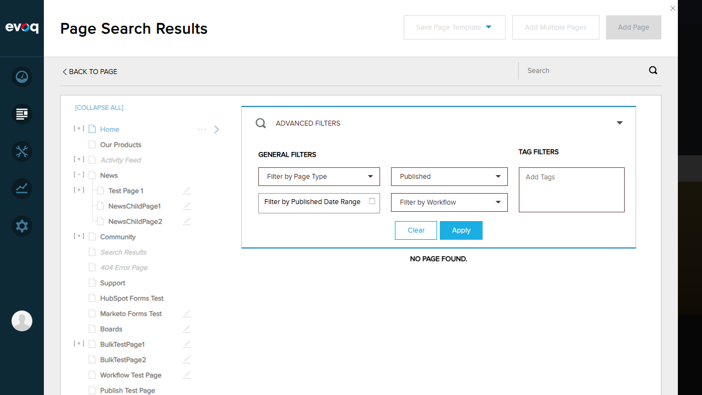
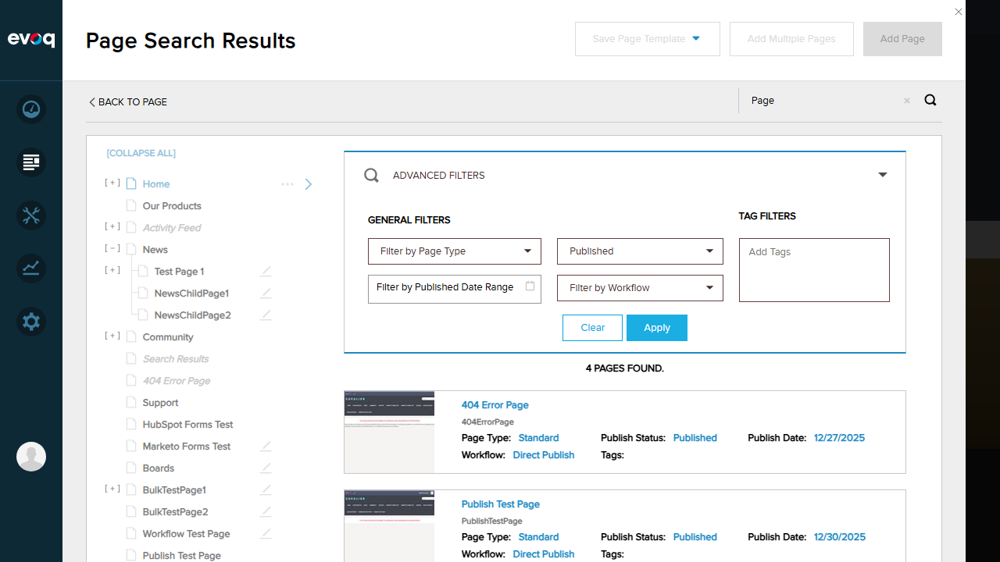

Description: When navigating to the Pages section, root-level pages should be displayed by default (no parent filter applied).
Steps Taken:
Logged in as SuperUser (host)
Navigated to Content > Pages
Observed the page list displayed
Expected Result: Root-level pages are displayed in the tree view
Actual Result: Root-level pages (Home, Our Products, Activity Feed, News, Community, etc.) were displayed correctly in the page tree
Screenshot:
Test 2: Get Pages by Parent ID (Child Pages)
Status:PASS
Description: When expanding a parent page, its child pages should be displayed.
Steps Taken:
Located a parent page with children (News page with [+] indicator)
Clicked the expand icon next to News
Observed child pages appearing under the parent
Expected Result: Child pages should appear nested under the parent page
Actual Result: Child pages (Test Page 1, NewsChildPage1, NewsChildPage2) were displayed under the News parent page
Screenshot:

Test 3: Search Pages with Search Key
Status:PASS
Description: Search functionality should filter pages based on the search term.
Steps Taken:
Entered "Test" in the search box
Clicked the search icon / pressed Enter
Observed search results
Expected Result: Only pages containing "Test" in their name should be displayed
Actual Result: Search returned "12 PAGES FOUND" including Test Page 1, Test Page 2, Test Page 3, HubSpot Forms Test, Marketo Forms Test, BulkTestPage1, BulkTestPage2, Workflow Test Page, Publish Test Page, URL Test Page, Test Normal Page, and Workflow Test Page New
Screenshot:


Test 4: Pagination in Page List
Status:PASS
Description: The page list should support pagination for large result sets.
Steps Taken:
Reviewed the SearchPages API endpoint in code
Confirmed pageIndex and pageSize parameters are supported
Verified all 12 search results were displayed (within single page threshold)
Expected Result: Pagination should be available for large result sets
Actual Result: The API supports pagination via pageIndex and pageSize parameters. With only 12 results, all were displayed on a single page. The SearchPages endpoint returns TotalResults count for pagination support.
Code Evidence: SearchPages method in EvoqPagesController.cs accepts pageIndex and pageSize parameters and returns TotalResults for pagination calculation.
Test 5: Edge Cases - Special Characters in Page Names
Status:PASS
Description: Search should handle special characters and XSS attempts safely.
Steps Taken:
Searched for "script" to find a page with XSS-like name
Verified the page with <script>alert('XSS')</script> in its name was found
Confirmed the page name was properly HTML-encoded in the display
Expected Result: Special characters should be properly encoded and search should work
Actual Result: Search found "1 PAGE FOUND" - the page with script tags in its name. The page name was properly HTML-encoded as <script>alert('XSS')</script> preventing XSS execution
Screenshot:

Test 6: Advanced Filters - Filter by Publish Status
Status:PASS
Description: Advanced filters should allow filtering pages by various criteria including publish status.
Steps Taken:
Clicked on "Advanced Filters" to expand filter options
Selected "Published" from the "Filter by Publish Status" dropdown
Entered "Page" in the search box
Clicked "Apply" to apply the filter
Verified only published pages were returned
Expected Result: Only pages with "Published" status containing "Page" should be displayed
Actual Result: "4 PAGES FOUND" - 404 Error Page, Publish Test Page, URL Test Page, and Test Normal Page - all showing "Publish Status: Published"
Screenshot:


Observations
Permission-Based Filtering: The code includes permission checks via AdvancedPermission attribute (VIEW_PAGE_LIST,VIEW) and ISecurityService. Full testing of permission-based filtering would require logging in as users with different permission levels. As a superuser, all pages were visible. The API correctly implements permission checks through _securityService.CanManagePage() and _securityService.IsPageAdminUser() methods.
Empty Search with Filters: When using Advanced Filters with an empty search term, "NO PAGE FOUND" was returned. The search requires at least some search term when combined with filters.
Advanced Filter Options: The UI provides filtering by:
Page Type (Standard, Existing, URL, File)
Publish Status (None, Published, Draft)
Published Date Range
Workflow
Tags
API Capabilities: The SearchPages endpoint supports additional parameters not all exposed in UI: pageType, tags, publishDateStart, publishDateEnd, workflowId - providing comprehensive search capabilities.
XSS Protection: Page names with potentially malicious characters (script tags) are properly HTML-encoded, preventing XSS attacks.
API Endpoints Tested
Endpoint
Method
Parameters
Description
GetPageList
GET
parentId, searchKey
Gets page list filtered by parent ID and search key

 


